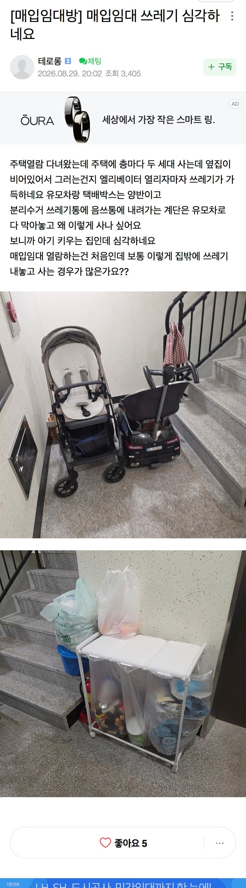

법적으로 공용공간인 계단에 유모차 길막 ㅋㅋㅋㅋㅋㅋ ㅅㅂ

법적으로 공용공간인 계단에 유모차 길막 ㅋㅋㅋㅋㅋㅋ ㅅㅂ
집안이 중산층에서 계단식 하락 계단식 상승으로 모든 타입 다살아봤는데 일반아파트 복도식일반아파트 복도식 주공아파트 빌라 lh국민임대 빌라 행복 민간공임 청약 이렇게 순서대로 살았는데 개거지발싸개 새끼들 사는동네는 딱 그런 새끼들만살고 개좆같이 살고 쓴다 막 서울처럼 몇십억은 아닐지라도 사람답게 살려면 최소한 민간공공임대 보증금 1억부터 인간다운곳이고 준신축,신축 2~3기 신도시 3억대~5억대부터 많이 살만함 공공임대 테크전인 신혼타운 행복아파트만가도 벌레버러지 새끼들 집단기생 말이 안나온다 긍정적인 효과는 개벌레굴 탈출 하려고 존나 열심히 살게됨ㅇㅇ 그래서 사람다운 사람들은 탈출하고 버러지새끼들만 모여남아서 고독이 되는거임 다들 힘내서 탈출혀라
진짜 가난한곳은 복도, 엘베 냄새부터가 씨발이고 관리가 안됨 답이없음 음식물 쓰레기 냄새 하수구 냄새 찌린내 똥냄새 별 개좆같은 냄새가 로테이션 돌면서 365일 난다
근데 거지굴에 살면서 위화감을 못느끼면 동화된거임 난 괜찮은데? 하는 사람들 같은 벌레가 된거임 난 동화 될때 쯤 마다 2~5년마다 거주지가 바꼈기 때문에 알수있음 그 거지같은 환경과 냄새가 익숙해지고 이상함을 못느끼게됨 적응하지말고 동화되지 말고 안주하지 말고 탈출해라
개버러지 못배워처먹은 쓰레기들 벌금 오지게 물리고 무릎꿇려야정신차림
씹버러지 ㅅㄲ들이네 ㅋㅋ 내쓰래기도 저기 버려주는게 맞지 유모차에 쓰래기 가득 실어드리고